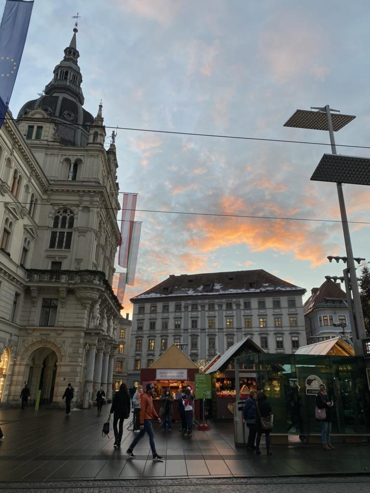
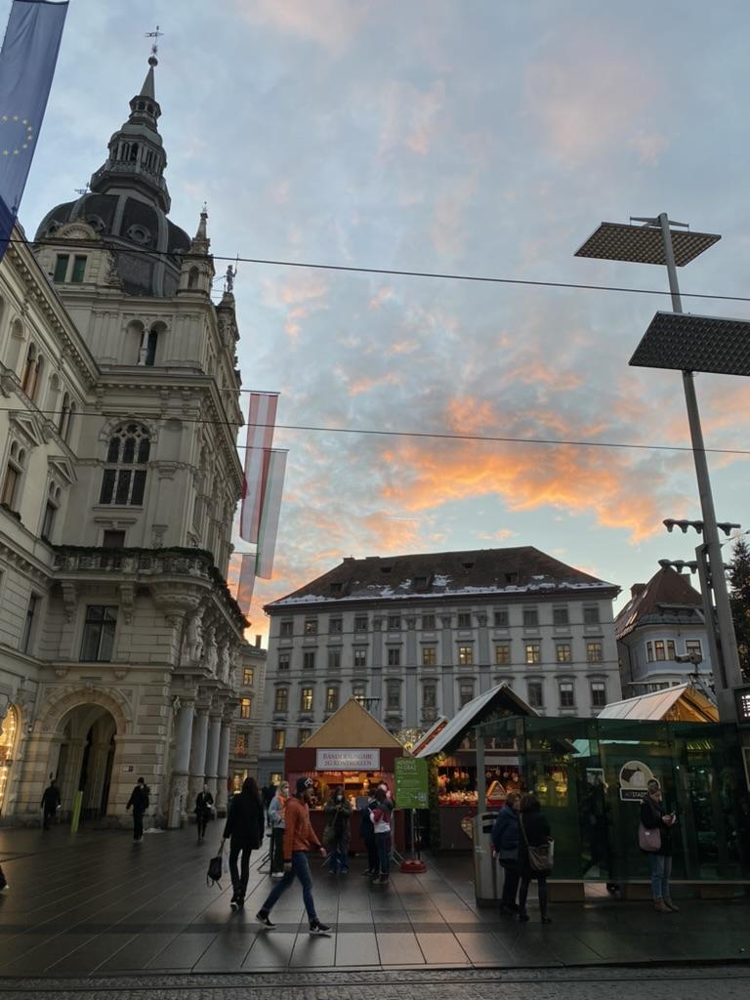

Architektur in Graz - Der Grazer Hauptplatz
 

Der Grazer Hauptplatz ist das lebendige Herzstück der Stadt und ein faszinierendes Freilichtmuseum der Architekturgeschichte. Umgeben von prächtigen historischen Gebäuden, erzählt jeder Winkel eine eigene Geschichte und lädt zum Verweilen ein. Hier treffen sich Einheimische und Touristen, um das bunte Treiben zu beobachten, einen Kaffee zu genießen oder einfach die besondere Atmosphäre auf sich wirken zu lassen.
Dominierend ist das imposante Rathaus mit seiner neobarocken Fassade, das stolz am südlichen Ende des Platzes thront. Aber auch andere Gebäude wie das Luegg-Haus mit seinen beeindruckenden Stuckverzierungen oder das Erzherzog-Johann-Haus mit seiner historischen Bedeutung tragen zum einzigartigen Flair bei. In der Mitte des Platzes befindet sich der Erzherzog-Johann-Brunnen, ein beliebter Treffpunkt und Fotomotiv. Von hier aus starten auch die beliebten Bummelzüge, die eine entspannte Stadtrundfahrt ermöglichen.
Der Hauptplatz ist nicht nur ein architektonisches Highlight, sondern auch ein Ort des Austauschs und der Begegnung, wo Märkte stattfinden, Feste gefeiert werden und das städtische Leben pulsiert.
Fun-Facts zum Grazer Hauptplatz:
- Das Rathaus: Das heutige Grazer Rathaus wurde Ende des 19. Jahrhunderts im Stil des Neorenaissance erbaut und ist das vierte Rathaus an dieser Stelle.
- Roland-Statue: Vor dem Rathaus steht eine kleine Statue des "Roland", die aus dem Jahr 1640 stammt und einst als Symbol der städtischen Gerichtsbarkeit diente.
- Versteckte Arkaden: Viele der Gebäude rund um den Hauptplatz verbergen im Inneren wunderschöne Arkadenhöfe, die einen Blick hinter die prächtigen Fassaden erlauben.
- Weihnachts-Hotspot: In der Adventszeit verwandelt sich der Hauptplatz in einen märchenhaften Weihnachtsmarkt, mit einem riesigen beleuchteten Christbaum und zahlreichen Ständen.